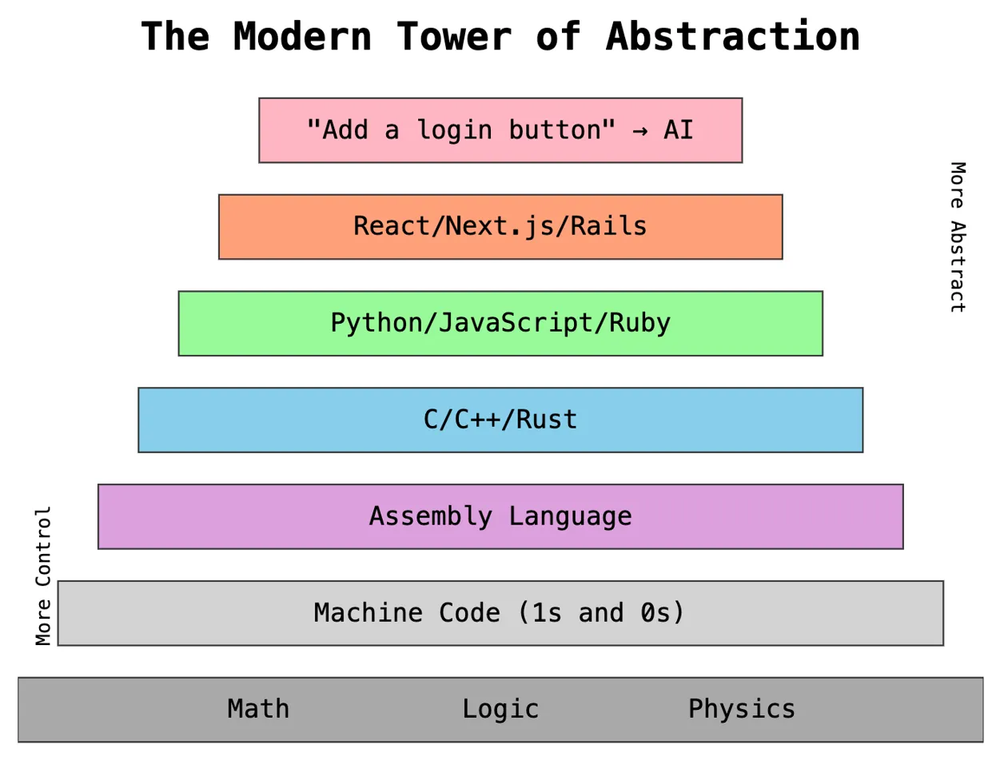

Introduction to The C Programming Language
C Programming may seem overly difficult or hard to read when compared to a more modern language like Python, but that superficial barrier of entry, once overcome, reveals a language that gives you a lot of power. Power in processing speed, control, and efficiency. Because there are a lot of features to go over and the early steps are small, there are going to be things that go unexplained. When this happens, don't panic, it will be gone over in due time, or use it as an opportunity to search for the answer. Learning C is a moderately difficult but rewarding experience and one that gives you a language that is at the core of spaceships, banking infrastructure, robots, and just about every other computer on the planet.
The C Programming Language
The C programming language was developed in 1972 at Bell Labs by Dennis Ritchie. It was originally developed as a successor to the B programming language (there was no A...boring). Since its inception, it has become one of the most used languages today. In fact, most computers, regardless of use, shape, or manufacturer, use C at some layer. This is why it is the go-to language to learn for both developers and hackers. It's like a common language shared between all modern computers.
C is an imperative procedural language with static typed variables. What that means:
- Imperative procedural - Basically everything that the language can do is broken down into discrete commands that alter a program's overall state
- Statically typed - means that variables can only be one type, decided at its creation
- So if a variable is an integer, it will always be an integer
Remember the slides from Software Basics and the levels of abstraction, software runs at different levels of abstraction, the lowest form being the Instruction Set. C is a High/Middle Level Language, although compared to modern languages it is sometimes referred to a low-level language(not necessarily correct but you might see it). Its status is above the Assembly Language and below scripting/interpreted languages like Python and Java. C falls between them because it is a compiled language, meaning that the actual program we write will be translated down into machine code that the computer can recognize. Python code is ran through an interpreter where each line triggers a pre-compiled piece of code at runtime. Because Python is reliant on pre-written "pieces of code" that are hard for most programmers to access, C offers more control over what the computer is doing, making C code oftentimes very fast compared to Python.

Write -> Compile -> Run
As discussed in the last section, C is a compiled language, meaning we write the code first, then need to compile it down into binary machine code in order for the computer to run it. We do this because computers only understand very specific commands/functions that make the transistors do what we want. Transistors can only be on or off, a 1 or a 0, meaning that is the language they ultimately understand. Binary is a number system that uses 1's and 0's to convey information, and eventually all programs are converted to it in order to run on the CPU. But since we can't really understand binary we need to code in a way that we can understand and then compile down into a form the computer can understand.
Steps to make a C file, compile it, and then run it, via console commands:
- Open Sublime Text
- Make a new file
- Make the basic start of a C program, there is an example below
- Change it to be the program you want
- Save it as filename.c, naming it what you want (hopefully descriptive of its purpose)
- Save the file in a location you remember
- Open your cmd (for Windows) or Terminal (for Mac) or Shell (for Linux)
- Use the command
cd Folderto navigate to the location from step 6 - With the C file in the same folder as the console, type
gcc filename.c- This will create an executable file called a.exe or a.out (depending on your system)
- If you want to name your executable use
gcc filename.c -o outputname.exe- take out the .exe if you are not using Windows
- Run the created file by typing
a.exe(for Windows) or./a.out(for Mac or Linux)
When we do gcc hello_world.c -o a.exe (for Mac/Linux gcc hello_world.c -o a.out), we are using the GNU Compiler Collection (GCC) to take our C file and convert it into machine code that the computer can understand. We will look at a C program that outputs "Hello World" to the console. This file is a text file that is stating what I, as a programmer, want the computer to do in the C language. The compiler will take it and turn it into a file called [[a.out|a.out]]. This a.out file is in a format that the computer's CPU can understand. Unfortunately, because it is in a raw format, there's no real way to display it in a way that we would understand. I took the liberty to dump out the binary, hexadecimal, and assembly representation to see what the computer is actually seeing.
Here is how they are organized with links:
- Code
- hello_world.c
- The C program
- a.exe
- The raw executable for my Windows machine (most look like this but have minor variations)
- Data
- assembly
- hello_world.s
- The assembly code that my code got turned into before fully being compiled into machine code
- hello_world.s
- bin_dumps
- hello_dump_b.txt
- The binary representation of the C file containing the human-readable code
- a_dump_b.txt
- The binary representation of the executable, parts of this are the actual binary that is being sent to the CPU at the transistor level
- hello_dump_b.txt
- hex_dumps
- hello_dump_h.txt
- The hexadecimal representation of the C file containing the human-readable code
- a_dump_h.txt
- The hexadecimal representation of the executable
- hello_dump_h.txt
- assembly
- hello_world.c
The various "dumps" are raw readings from the files themselves, generated from a program that goes into the physical memory and just reads the info there without any formatting. The binary ones are the raw 1's and 0's, while the hexadecimal ones are represented using 16 characters (0-9 and A-F, 10 + 6 = 16) instead of 2 (1 and 0). This makes it a little more compact but still see the relations between code and machine instruction. The assembly one is generated from gcc using certain options. It is the assembly representation that is ran somewhere in the a.out executable.
Cool Thing to Try
Look around the dumps to see if you can see recognizable parts. You can try to find the specific part where the "Hello World" is stored.
Anatomy of a C Program
Let's bring that hello_world.c over here to get a better look at it:
// Hello World Program
// Author: John Szwakob III
/*
Description:
A program that says Hello World.
*/
#include <stdio.h>
int main(){
printf("Hello World!");
return 0;
}
^11b299
While its a little alien, it's not too bad right? Let's break it down from the top down, line-by line:
// Hello World Program
// Author: John Szwakob III
/*
Description:
A program that says Hello World.
*/
- This part is a set of three code comments. Comments are text that the C compiler ignores, and they can be signified by either:
// Comment- for single line comments or,/* Comment */- for multi-line comments
- They have no purpose, do nothing, and are completely ignored by the compiler
- Usually, to make a program's purpose more obvious at first glance, programmers will employ comments to explain their code for their future self or for other developers seeking to understand or improve the code later on
- Here I am using it as a way to track who wrote it and the programs purpose
- We will go over our own standard soon, but this is a basic one
- This part is grabbing a library of functions for us to use in our program
- Specifically that
printf("...");line is supplied by the standard Input/Output (stdio.h) library - Putting at the top let's use the function without having to write our own every time we make a program
- Plus for the simple stuff, usually you can't get better than the ones made by past programming wizards
Read the Error
Try compiling a program that prints without the #include<stdio.h> part. Try to compile it and see what error comes up.
Try to read it, and based on what you did to cause it, understand what it is saying.
- This is the main function, it represents the start of our program.
- The compiler automatically compiles the final executable to run the main function and all the lines of code within it and no other function, unless they are called from the main one
- Everything between the curly braces (
{}) gets ran as the main function
- A statement is most of what we will be writing in this course. All statements in C end in a semicolon ( ; ), get used to it and get used to looking for missing ones...
- This statement is a function defined inside the stdio.h library. It takes in data inside of the parentheses, here the words "Hello World!", and will print that data to the console output
- Notice that there needs to be "quotes" around the words. This is how we represent textual information, called strings
- stdio.h has more functions that we will go over in a future lesson, but if you are the eager type, this link will take you to the W3 Schools Reference entry for the library. Within it contains all the functions that are available to us when we type
#include <stdio.h>and how to use them.
Read the Error
Something that will plague you well into your programming career will be missing semicolons. It is best to see what the error looks like before you run into it organically and want to go crazy. Take out the semicolon after the printf statement and see what the error looks like. Read it, look at the numbers and try to connect it to the line numbers in your code.
- This statement represents the end of the program when contained in the main function. In other functions, it terminates the lifetime of the function and then yields the result to the place the function was called.
- At any point in the main function if the return statement is ran all code below it is ignored
- The
intinint main(){}refers to the return type of the function, meaning that it is expected to output an integer by the end of it.return 0;is saying that the "result" of our program is 0. 0 is traditionally used as a code for "everything went as planned with no errors"- When the function your web browser uses to fetch a website, if that website doesn't exist the function ends with the classic "Error 404", ie a line in the code has something along the lines of
return 404;
- When the function your web browser uses to fetch a website, if that website doesn't exist the function ends with the classic "Error 404", ie a line in the code has something along the lines of
- If you remove it nothing will happen, but when you are dealing with advanced C it is important to pay attention to functions and knowing everything is fine can help a lot
Note
Now that you understand the parts of a program enough not to break it immediately, play around with the program. Try different things, see what breaks if you remove it, see what breaks if you add to many of a thing, and read the errors. Try to understand what the compiler is saying to you when its screaming. Try some of these: - Change what the program says - Add more outputs - Look up online how to do multiple lines - Print a number
Data Types and Variables
Let's start adding to the basic program by going over how data is represented and manipulated in C.
In C there are various data types that we will go over in more depth a little later. For now, know that the basic types available to us out of the box are as follows:
- int - Integers: Whole numbers without any decimals
- Examples: 1, 2, 3, 0, 100, -100, 99999, etc
-
float/double- Floating point numbers: Fractional numbers that represent some real number- Examples: 0.0, 1.0, 3.1415, 1/2, 37.35962. 99.9999, etc
-
char- Characters: Single characters that can be letters, symbols, or single numbers- Examples: 'A', 'B', 'C', '1', '$', '/', ' ', etc
You can use them like we did in hello_world.c, by just using them in a function like printf or return. However, that doesn't store that information in a spot you can use over and over again. For that we use variables. Variables store information under a name so that you can keep track of a value as you do manipulations on it. Because C is a [[0_basics_of_c#^8463de|statically typed language]], when you create a variable you need to create it with an intended type that it will always be. You declare variables in the following ways:
or
Where "type" would be replaced by one of the types from the above list, "variableName" is replaced by the actual name you want for the variable, and "Value" the initial value of type "type" that variableName will hold.
This code creates an int, float, and char all with initial variables. The following code does the same thing only strung out across multiple lines.
int main(){
int whole_number;
float decimal_number;
char character;
whole_number = 10;
decimal_number = 3.1415;
character = '$';
return 0;
}
You can use the = sign to assign a value to the variable so long as it is of the right type.
Operators
^7add8d
Operators are the things we can do with data. Things like adding, subtracting, and the rest are managed by symbols we are pretty used to. There are a few different kinds of operators and there will be more info on them later but for now, the following are the arithmetic operators:
+- Addition ^ec7301-- Subtraction*- Multiplication/- Division%- Modulus/Remainder Division- This type of division returns the remainder of a division like so:
- 5 % 3 = 2 because 5 / 3 = 1 R 2
- 4 % 3 = 1 because 4 / 3 = 1 R 1
- 3 % 3 = 0 because 3 / 3 = 1 R 0
- ...
- This type of division returns the remainder of a division like so:
As you can see we can do operations on variables and on values alone, using the = to assign the result to a variable. However, you may notice a problem if you try and run this code. There's no output of the results! Sure, I am keeping track of the values using comments to show it in Obsidian, but if this was code to calculate something, how would be know the result?
Your first instinct might be to do something like this:
If you try this you might find a warning that looks something like this:
[goodguy@magus-turrim CS108]$ gcc sum.c
sum.c: In function 'main':
sum.c:16:16: warning: passing argument 1 of 'printf' makes pointer from integer without a cast [-Wint-conversion]
16 | printf(sum);
| ^~~
| |
| int
In file included from sum.c:9:
/usr/include/stdio.h:363:43: note: expected 'const char * restrict' but argument is of type 'int'
363 | extern int printf (const char *__restrict __format, ...);
| ~~~~~~~~~~~~~~~~~~~~~~~^~~~~~~~
However, an output file is still generated. If you are brave enough to run it, you will find the following message:
Which boils down to ERROR. We will go into what that is later, but first let's see how we should do Input/Output using our data types.
Basic Input/Output
Output
We have been and will continue to use printf() for the majority of the course. It's simple, standard, and easy. In your hello.c program, we used it for the simple "Hello World!". For almost all situations where you would want to output information to the user or as a means of debugging, you will use printf(). Basic usage to print out strings to the console is the same as we used for Hello World!. However, if you have questioned why it is printf() and not just print(), you may wonder if there is more to it than just the basic printing. If you have tried to print out multiple lines you will have ran into a problem. Newlines are taken care of by using "\n" at the end of your printf() input string like so:
These are called escape sequences and they format the output of printf(). The "f" means print format, because we can use special characters and codes to change how the text is shown on the screen. Here is a list of some of the other ones, try them if you feel like it:
https://en.wikipedia.org/wiki/Escape_sequences_in_C
Basic Format Specifiers
The problem with the [[0_basics_of_c#^7add8d|previous code]] was that the printf() function expects a certain format for its inputs. This format is a string that contains a set of characters and/or series of format specifiers. Strings are usually defined using characters "between two double quotes". In order to print out the value of a variable, you need to use a format specifier in order to tell the printf() function what type of value it is printing. The following is a list of the format specifiers for each of the basic data types:
| Type | Format Specifier | Example | Output |
|---|---|---|---|
| Integer | %d / %i |
printf("%d", 42) |
42 |
| Float | %f |
printf("%f", 3.14) |
3.140000 |
| Scientific notation | %e |
printf("%e", 12345.678) |
1.234568e+04 |
| Character | %c |
printf("%c", 'A') |
A |
| String | %s |
printf("%s", "hi") |
hi |
| Unsigned integer | %u |
printf("%u", 42) |
42 |
| Octal | %o |
printf("%o", 8) |
10 |
| Hexadecimal (lowercase) | %x |
printf("%x", 255) |
ff |
| Hexadecimal (uppercase) | %X |
printf("%X", 255) |
FF |
| Pointer address | %p |
printf("%p", &x) |
0x7ffee... |
| Percent literal | %% |
printf("%%") |
% |
https://www.w3schools.com/c/c_data_types.php
The format specifier works like a placeholder in the format string that says "there will be a value of type x here". It looks like this
int int_var = 12345;
int var_one = 1;
int var_two = 2;
int var_three = 3;
printf("The stuff you want to always print should look like this.\n");
printf("If I want to print an integer variable here: %d, I can\n", int_var);
printf("use the format specifier for a decimal integer number\n");
printf("After the format string, you use a comma to add another input\n");
printf("So for three variables: 1:%d 2:%d 3:%d \n", var_one, var_two, var_three);
%d vs %i
While the difference is superficial for the most part, there is a reason you will see me and many other programmers online use %d for most programs. While %i is easier to remember and makes more sense, think about how many different types of integers there are. Integers can be binary, decimal, octal, hexadecimal, or any other horrific number system. %d means a decimal integer number, not just any old integer. printf() doesn't really care about it, but some other stdio.h functions do and may cause future problems so be on the look out for that and be specific.
The following are examples of the output of various printf() function calls all with different format strings. Assume that everything is happening in a main function and we have included stdio.h to save on space
-
Inventory
Output: -
Money and currency
Output:
- Average
Output:
int value_a = 35; int value_b = 11; int value_c = 17; int sum = value_a + value_b + value_c; // Since sum is an int, we need to tell the compiler to properly treat it like a float float average = (float)sum / 3.0; printf("The three values are:\n"); printf("%d, %d, %d\n", value_a, value_b, value_c); printf("Their average is: %f", average);
Inputs
Inputs are done the same way as outputs, but in reverse! Instead of printf(), we use scanf() to scan a formatted string from the standard input, aka the console. So if you wanted to read inputs from the user and store them into a variable, you would need to specify the format of the input coming in from the user. Refer back to the format specifiers from the output section because they are the same for both input and output variable types. So if we wanted to store the input from the user in the form of an integer, it would look like this:
int input_var;
printf("Please give me a number:");
scanf("%d", &input_var);
printf("Your number mulitplied by 2: %d", input_var*2);
[goodguy@magus-turrim CS108]$ ./a.out
Please give me a number:5
Your number mulitplied by 2: 10
[goodguy@magus-turrim CS108]$
I'll leave trying out the other data types for your own time, but they all follow the same form. As for that "&", we will get to that in time, but for now think of it as a way to open the variable to have information read in. That's not exactly it, but until we get a little deeper it will work fine.
Multiple Inputs, One scanf()
There is a way to input multiple forms of data using one scanf() function call. Remember that printf() and scanf() work very similarly, so take a look at the printf() examples and try it out!